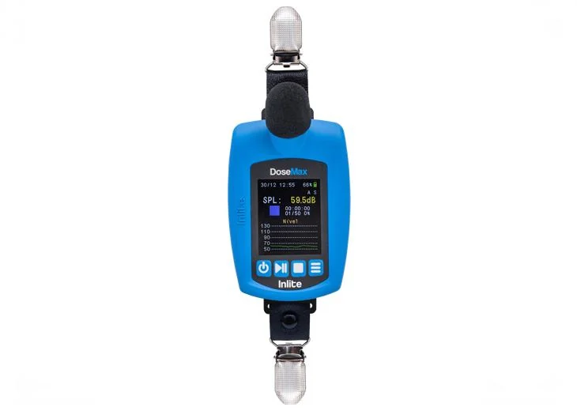

Dosímetro de Ruído
O instrumento indicado para avaliação de exposição ao ruído ocupacional em jornada completa. Ideal para laudos conforme NHO-01 e NR-15, registra a exposição do trabalhador ao longo de toda a jornada de trabalho com precisão e rastreabilidade.
Estoque imediato